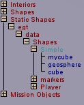

Starting World Editor Creator
This tool is used to create (or place) new content. From the World Editor Creator we can select objects to insert into our current mission.
The top-level folders are:
Interior - Buildings and other interiors.
Shapes - Animatable shapes.
Static Shapes - Lightweight inanimate shapes.
Mission Objects -
Environmental stuff like the sky, sun, water.
Mission stuff like MissionArea, Triggers, and Cameras.
System stuff like SimGroups.
Creating new objects is very like pasting objects. Simply,
Once an object is placed in the world, you can freely manipulate its position, rotation, and scale via the mouse. If, however, you want to change object parameters, you'll need to switch back to the Inspector.
There will be a FAQ later in the appendix that deals with common stumbling blocks, but I'm going to list a few issues here because they are so very common, and this is a natural place to discuss them.
Q: "I placed an INTERIOR and the textures did not show up. Why?"
A: Unlike SHAPES, the INTERIORS do not immediately display their textures when inserted into the world. They have to be processed by the lighting stage (remember the message Lighting Mission when starting the mission?). Once you have placed an INTERIOR, press ALT + L to re-light the scene. This may take a few seconds, depending on the complexity/size/density of the mission.
Q: "How can I accurately place my objects the first time?"
A: Initial object placement is determined by line of sight. There are three basic placement cases. In the first two cases, a ray is cast from the eye of the camera/player until it hits the bounding box of another Mission Object or the Terrain/Water. In either of these cases, the object is placed at the point of collision. The third case is when the eye of the camera/player is aimed at the sky. In this case, the ray-cast fails (no-collision) and the object is placed at root of the ray (i.e. where you are looking from). Regarding bounding box collisions. I wouldn't count on those always working. I've had many cases where the ray collided with the ground instead of the intended target in front of the ground. Just get used to the idea that you will have to finesse things into the right location after placing them.
If you have been exploring the example/fps directory, you may have noticed a similarity between the layout of the directories and the Creator's hierarchy. That is because there is a dependency (mostly for interiors). A more thorough discussion of this will be given in Tech School.
Although a complete discussion on adding new interiors and shapes is beyond the scope of this section of the guide, I will outline the most basic steps required to get new INTERIORS and SHAPES into the Creator Tree.
Torque needs the following files to create an Interior:
DIF - Once an interior has been properly generated, there will be a file named interior_name.dif, where interior_name is whatever you chose to name your interior object.
Graphic File(s) - A non-transparent interior will have at least one graphic file. By default, the graphic files used for the interior need to be located in a directory above the interior's DIF file or in the same directory as the DIF file.
Example:
Torque needs the following files to create a Shape:
DTS - Once a shape has been properly generated, there will be a file named shape_name.dts, where shape_name is the whatever you chose to name your shape object.
Graphic File(s) - A non-transparent shape will have at least one graphic file. By default, the graphic files used for the shape need to be located in the same directory as the shape's DTS file.
DSQ(s) (optional) - For an animated shape created in Max (does not apply to shapes created with Milkshape), there is a third type of file, containing animation data. For simplicity sake, this will not be discussed here, other than to note that they may exist. By default, the DSQ file(s) used for the shape need to be located in the same directory as the shape's DTS file.
Example:

You might be wondering why the object showed up in Static Shapes instead of Shapes. Objects under Static Shapes are lightweight objects. Additionally, you can do some scripting to create objects with animations and other characteristics. They will show up under Shapes. You'll learn more about this in the On The Job Training chapter. For now, let us move on to the Mission Area Editor.